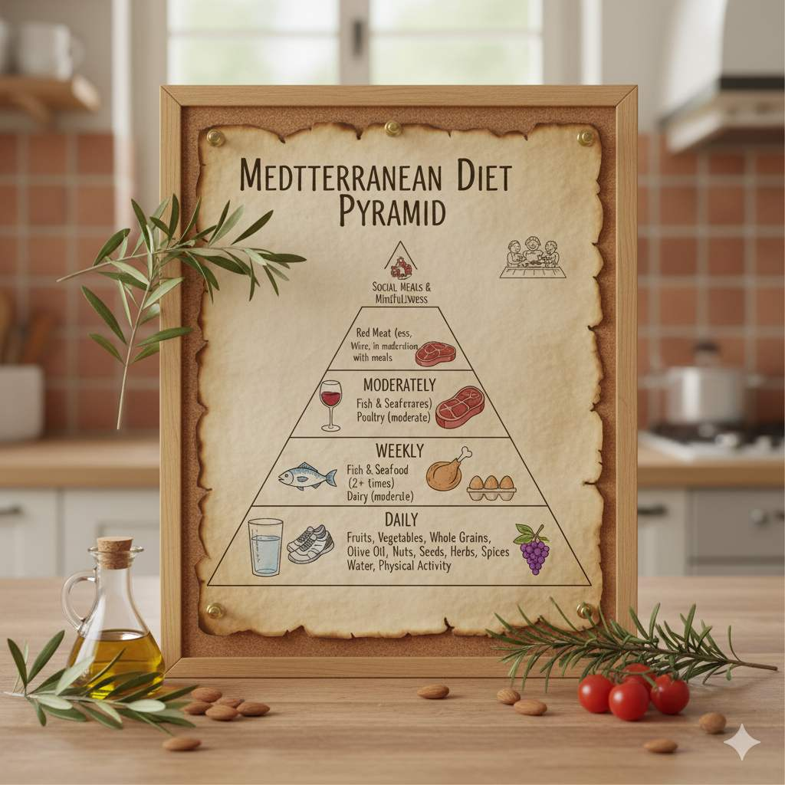

Imagine an eating pattern so effective that it consistently ranks as one of the world's healthiest diets—not because it's restrictive or complicated, but because it's delicious, satisfying, and naturally aligns with how our bodies are meant to be nourished. This isn't a fad diet; it's a centuries-old approach to eating that people around the Mediterranean Sea have enjoyed for generations, and science now confirms its remarkable benefits.
The Mediterranean diet isn't just about food—it's a lifestyle that emphasizes fresh, whole foods, shared meals, and physical activity. In my practice as a nutrition specialist, I've seen firsthand how adopting this eating pattern can transform health outcomes, from reducing cardiovascular risk factors to improving mental clarity and supporting sustainable weight management.
The Science-Backed Benefits
Research spanning decades has consistently demonstrated the Mediterranean diet's profound impact on health. The PREDIMED study, one of the largest clinical trials examining this eating pattern, found that it can reduce the risk of major cardiovascular events by approximately 30% compared to a low-fat diet. But the benefits extend far beyond heart health.
Key Health Benefits:
Heart Health: Rich in monounsaturated fats from olive oil and omega-3 fatty acids from fish, this diet helps reduce LDL cholesterol, lower blood pressure, and decrease inflammation.
Brain Function: The combination of antioxidants, healthy fats, and anti-inflammatory compounds may protect against cognitive decline and reduce the risk of neurodegenerative diseases.
Weight Management: Focusing on nutrient-dense, high-fiber foods promotes satiety and helps maintain a healthy weight without calorie counting.
Longevity: Studies of Blue Zones—regions with exceptional longevity—often reveal eating patterns remarkably similar to the Mediterranean diet.
Core Principles of the Mediterranean Diet
At its heart, the Mediterranean diet emphasizes plant-based foods, healthy fats, and moderate consumption of animal products. Here are the fundamental components:
Plant-Based Foundation
Fruits, vegetables, whole grains, legumes, nuts, and seeds form the basis of most meals. These foods provide essential vitamins, minerals, fiber, and antioxidants. Aim to fill at least half your plate with vegetables at lunch and dinner.
Healthy Fats as Primary Fat Source
Extra virgin olive oil is the principal source of added fat in the Mediterranean diet. Rich in monounsaturated fatty acids and antioxidants, it's used for cooking, dressing salads, and even dipping bread. Nuts, seeds, and avocados provide additional healthy fats.
Fish and Seafood Twice Weekly
Fatty fish like salmon, mackerel, sardines, and tuna are rich in omega-3 fatty acids, which support heart and brain health. The Mediterranean approach includes fish and seafood at least twice per week.
Moderate Dairy, Poultry, and Eggs
Yogurt, cheese, poultry, and eggs are consumed in moderate portions. Traditional Mediterranean diets often feature yogurt and cheese (especially feta and Parmesan) rather than milk.
Limited Red Meat and Sweets
Red meat is enjoyed occasionally, typically in small amounts as a flavoring rather than the main event. Sweets are reserved for special occasions, with fruit serving as the everyday dessert.
Red Wine in Moderation
If you consume alcohol, the Mediterranean diet typically includes a glass of red wine with meals. The antioxidants in red wine may offer some health benefits, but this is optional and should be discussed with your healthcare provider.
Adapting the Mediterranean Diet to Your Lifestyle
One of the greatest strengths of the Mediterranean diet is its flexibility. You don't need to be of Mediterranean heritage to benefit from this approach. Here's how to incorporate its principles regardless of your cultural background or food preferences:
Start with small changes: Begin by adding one vegetable to each meal or switching to olive oil for cooking. Gradually increase plant-based meals throughout the week.
Focus on flavor: Use herbs and spices generously to create delicious meals without excessive salt. Basil, oregano, rosemary, garlic, and lemon are staples in Mediterranean cooking.
Make it social: In Mediterranean cultures, meals are often shared with family and friends. This social connection enhances the eating experience and promotes mindful consumption.
Stay active: Physical activity is an integral part of the Mediterranean lifestyle. Find activities you enjoy, whether it's walking, swimming, gardening, or dancing.
Simple Mediterranean Diet Swaps
• Instead of butter → Use extra virgin olive oil
• Instead of red meat → Choose fish or legumes
• Instead of white bread → Opt for whole grain
• Instead of salty snacks → Enjoy a handful of nuts
• Instead of sugary desserts → Have fresh fruit
Sample Mediterranean Meal Ideas
Breakfast: Greek yogurt with berries, walnuts, and a drizzle of honey
Lunch: Large salad with mixed greens, chickpeas, cucumbers, tomatoes, feta cheese, olives, and olive oil vinaigrette
Dinner: Grilled salmon with quinoa and roasted vegetables (bell peppers, zucchini, eggplant)
Snacks: Apple slices with almond butter, carrot sticks with hummus
Frequently Asked Questions
Not necessarily. While some ingredients like extra virgin olive oil and fresh fish can be pricey, the diet emphasizes affordable staples like beans, lentils, seasonal vegetables, and whole grains. Buying in-season produce, frozen vegetables and fish, and purchasing olive oil in larger containers can help manage costs. The savings from reducing consumption of processed foods and red meat often offset any additional expenses.
Absolutely. The Mediterranean diet is naturally plant-forward, making it easily adaptable for vegetarians and vegans. Simply focus on the plant-based components—plenty of vegetables, fruits, whole grains, legumes, nuts, and seeds. For protein, emphasize beans, lentils, chickpeas, and soy products like tofu. The healthy fats from olive oil, nuts, and avocados remain central to the approach.
Some benefits can appear within weeks. Many people report improved digestion, more energy, and better sleep within the first month. Measurable changes like improved cholesterol levels and blood pressure often become apparent within 2-3 months. The long-term protective benefits against chronic diseases accumulate over years of consistent adherence. Remember, this is a lifestyle, not a short-term fix.
Conclusion: A Sustainable Path to Better Health
The Mediterranean diet offers more than just nutritional benefits—it provides a sustainable, enjoyable approach to eating that can last a lifetime. Unlike restrictive diets that focus on elimination, this pattern emphasizes abundance and variety, making it easier to maintain long-term.
As with any significant dietary change, I recommend consulting with a healthcare provider or registered dietitian, especially if you have existing health conditions. But for most people, adopting even a few principles of the Mediterranean diet can be a powerful step toward better health and greater enjoyment of food.
Here's to your health—Mediterranean style!
Dr. Nancy White is a board-certified nutrition specialist with over 15 years of clinical experience. She specializes in preventive nutrition and lifestyle medicine.